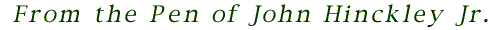

Dear Travis:
I'm leaving the Manifesto, and for that matter, the Revolution, in your capable hands. You have no choice but to rise to this momentous occasion. Be strong and never abandon your principles. I have work to do in Washington which may cost me my life. It is important work. Work that causes everything else to vanish into blackness. If Iris tries to reach me through you, give her my love and help her to be strong in the cataclysm to come.